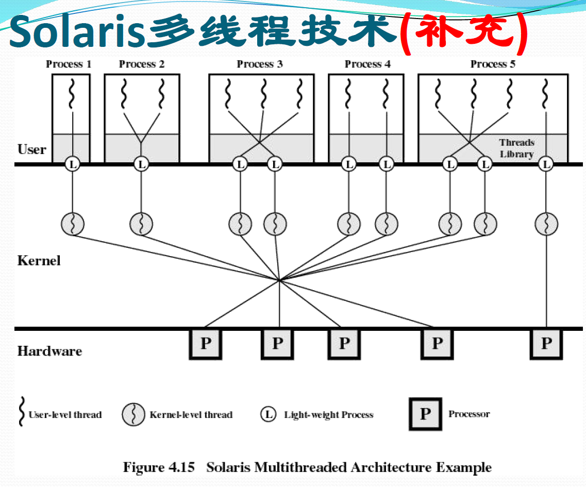

作为用户和计算机硬件之间的接口
用户接口
命令接口（允许用户直接使用）
程序接口（用户通过程序间接调用）：由一组系统调用组成（大多数情况下程序接口=系统调用/广义命令）
GUI：图形用户界面

操作系统是最接近硬件的层次
操作系统的特征：并发、共享、虚拟、异步
并发：指两个或多个事件在同一时间间隔内发生，这些事件宏观上是同时发生的，但是微观上是交替发生的。
并行——两个或多个事件在同一时刻同时发生（宏观和微观上都是同时的）。
共享：资源共享，指系统中的资源可供内存中多个并发执行的进程共同使用。
资源共享方式
资源分配方式
虚拟：将物理上的实体变成若干个逻辑上的对应物，物理实体是实际存在的，而逻辑上的对应物是用户感受到的。（虚拟技术中的“空分复用技术”、“时分复用技术”）——虚拟性依赖于并发性。
异步：在多道程序的环境下，允许多个程序并发执行，但由于资源有限，进程的执行不是一贯到底的，而是走走停停，以不可预知的速度向前推进。
操作系统的三层抽象：
手工操作阶段：计算机刚发明的阶段，操作系统未被发明
批处理阶段
单道批处理阶段：引入脱机输入输出技术（基于磁带），并监督程序负责控制作业的输入输出。
多道批处理阶段：每次往内存中输入多道程序，操作系统正式诞生，并引入了中断技术，由操作系统负责管理这些程序的运行，各个程序并发执行。

分时操作系统：计算机以时间片为单位轮流为各个用户/作业服务，各个用户可以通过终端与计算机交互。
实时操作系统：主要特点是及时性和可靠性

其他几种操作系统：
只有一个操作系统同时具备批处理、分时和实时处理的两种以上才被称为通用操作系统。
操作系统的功能
处理器管理：对处理器的管理和调度最终归结为对进程和线程的管理和调度，最大限度提高处理器利用率。
存储管理：管理内存资源，提供存储空间利用率。
设备管理：
文件管理：针对信息资源的管理。
联网与通信管理：
操作系统实现的层次结构


运行机制：两种指令、两种处理器状态、两种程序
两种指令
特权指令（需要核心态）：只有操作系统本身可以使用的指令，在内核态才能调用的命令，不仅仅影响运行程序本身，还会干扰其他程序及操作系统，比如修改机器状态、修改寄存器值等。
如果应用程序执行特权指令则会导致非法执行而产生保护中断，进而转向操作系统的“用户非法执行特权指令”的异常处理程序处理。
非特权指令：所有的用户程序都能够使用的指令，在用户态和内核态都可以调用的命令，在管态和目态下都可以工作。
两种处理器状态
两种程序
操作系统中的哪些功能需要内核程序执行？->内核
内核 
内核是计算机上配置的底层如那件，是操作系统最基本、最核心的部分。实现操作系统内核功能的程序就是内核程序。
功能：
内核的属性
操作系统的体系结构：大内核和微内核
操作系统的体系结构经典的分法就是将操作系统分成大内核和微内核。
大内核（单内核）：将操作系统的主要功能模块都作为系统内核，运行在核心态。广泛使用，如windows（自称采用混合式）、Unix/Linux等
微内核：只把最基本的功能保留在内核，强调结构性部件与功能性部件的分离。
混合内核：微内核和单内核的折中，较多组件在内核态运行以获得更快地执行速度。
外内核：尽可能减少内核的软件抽象化和传统微内核的消息传递机制，使得开发者专注于硬件的抽象化；部分嵌入式系统使用。
类比：操作系统的体系结构问题与企业的管理问题很相似。内核就是企业的管理层，负责一些重要的工作。只有管理层才能执行特权指令，普通员工只能执行非特权指令。用户态、核心态之间的切换相当于普通员工和管理层之间的工作交接。
中断机制的诞生
中断的概念和作用
过程：
特点
中断的分类
广义上的中断（=内中断+外中断）：指程序执行过程中，遇到急需处理的事件时，暂时中止 CPU 上现行程序的运行，转去执行相应的事件处理程序，待处理完成后再返回原程序被中断处或调度其他程序执行的过程。
内中断（异常、例外、陷入）：信号来源是CPU内部，是因为当前执行的指令引起的。
外中断（中断，狭义上的中断）：信号来源是CPU外部，与当前执行的指令无关。
操作系统是中断驱动的/中断是激活操作系统的唯一方式，硬件系统设置中断激活的硬件机制，配合操作系统的内核程序完成中断驱动方式（中断处理需要借助硬件电路）——操作系统实现的根本基础。
外中断处理过程：
恢复正常操作
中断可以嵌套，在中断处理过程中可以再响应其他中断，但是中断的嵌套层数应该有限制，同时中断的嵌套处理改变了中断处理的次序。
中断和异常的区别
| 中断 | 异常 |
|---|---|
| CPU 异步 | CPU 同步 |
| 内核态、用户态 | 大部分在用户态，内核态唯一的异常是“缺页异常” |
| 一般中断处理程序提供的服务不是当前进程需要的 | 是当前的进程需要的 |
| 快速处理，不可以被打断 | 可以被阻塞 |
| 允许嵌套 | 大多为一重等 |
| 不可以被异常打断 | 可以被中断中断 |
中断处理
中断源：程序性中断事件
该中断处理器执行机器指令引起。
中断源：处理器硬件故障中断事件（硬中断）
中断源：自愿性中断事件（访管中断）
处理器执行陷入指令请求 OS 服务引起；在操作系统中，它一般又被称作系统调用，比如请求分配外设、请求 I/O 等等。
处理流程是：
中断源：I/O 中断事件（狭义中断事件）
来源于外围设备报告 I/O 状态的中断事件
中断源：外部中断事件
由外围设备发出的信号引起的中断事件：
中断系统：想用和处理中断的系统，包括软/硬件子系统两部分，中断响应有硬件子系统完成，中断处理有软件子系统完成。中断系统是操作系统的基础，中断系统也是软硬件协同的经典例子。
中断的响应：指令执行周期最后增加一个微操作，以响应中断，CPU 在完成执行阶段后，如果允许中断，则进入中断阶段
中断装置：发现并相应中断/异常的装置。
中断处理过程
发现中断源，提出中断请求（选择响应哪一个程序）
中断当前程序的执行（保护现场）：保存当前程序的 PSW/PC 到核心栈
转向操作系统的中断处理程序：处理器状态已从用户态转换至内核态。
恢复现场：恢复原运行程序的 PSW，重新返回中断点，以便执行后续指令。
多中断
多中断处理


什么是系统调用


目的：对上层如果暴露过于细粒度的操作违背了软件复用的原则，所以将一系列的操作封装起来当作系统调用暴露。
系统调用和库函数的区别

系统调用的过程

凡是与资源相关的操作、会直接影响到其他进程的操作，一定需要操作系统介入，需要通过系统调用实现。
实现机制
陷入处理机制：计算机系统中控制和实现系统调用的机制
陷入指令：也称访管指令，或异常中断指令，计算机系统为实现系统调用而引起处理器中断的指令
每个系统调用都事先规定了编号，并在约定寄存器中规定了传递给内部处理程序的参数
参数传递方法
操作系统实现系统调用的机制被称为陷阱或异常处理机制。
由系统调用引起处理器中断的机器指令称为访管指令、自陷指令或中断指令，其中访管指令为非特权指令。
实现的要点：
和函数调用的区别：
| 系统调用 | 函数调用 | |
|---|---|---|
| 调用形式 | 按地址转向 | 功能号调用 |
| 实现方式 | 用户态转换内核态，在内核态执行访问核心栈 | 用户态 |
| 被调用代码位置 | 动态调用，服务例程位于操作系统内 | 静态调用，调用程序和被调用程序在同一程序内 |
| 提供方式 | 由操作系统提供 | 编程语言提供 |
进程的定义
程序：一个指令序列，一个具有一定独立功能的程序关于某个数据集合的一次运行活动。
引入多道程序技术以后，计算机中同时可以有多个程序运行，内存里同时放入多道程序，每个程序的代码、数据等存放的位置都不同，操作系统如何才能找到具体位置呢？
程序段、数据段、PCB三部分组成了进程实体（进程映像）。一般来说把进程实体简称为进程。
所谓创造进程，就是创造进程实体中的PCB，撤销进程就是撤销进程实体中的PCB
PCB是进程存在的唯一标志
进程是进程实体的运行过程，是系统进行资源分配和调度的一个独立单位。进程实体和进程并不一样，进程实体是静态的，进程是动态的，运行过程更加强调于他这这个生命周期。
进程的组成：进程由程序段、数据段、PCB组成。
进程映像：
PCB（Process Control Block）：

程序段：存放要执行的代码
数据段：存放程序运行过程中处理的各种数据
进程的组织：在一个系统中有成千上万个进程及其PCB，所以我们需要将他们组织起来。


进程上下文：
进程的特征
三种基本状态
另外两种状态
挂起态：随着不断创建进程，当系统资源尤其是内存资源已经不能满足进程运行的要求时，必须把某些进程挂起（suspend），对换到磁盘对换区中，释放它占有的某些资源，暂时不参与低级调度，起到平滑系统负荷的目的；也可能系统出现故障，需要暂时挂起一些进程，以便故障消除后再接触挂起并恢复进程运行。进程挂起的原因是多种多样的。
进程状态的转换

842书里面使用的五状态模型是就绪态、阻塞态、运行态、挂起就绪态、挂起阻塞态。
什么是进程控制：进程控制的主要功能就是对系统中的所有进程实施有效的管理，它具有创建新进程、撤销已有进程、实现进程状态转换等功能。->进程控制就是实现进程状态转换。
为了避免进程的一个状态没有执行完毕就进入其他状态导致错误，使用原语实现进程控制，原语的特点是执行期间不允许中断，只能一次执行完毕，这种不可被中断操作即原子操作。
原语采用“关中断指令”和“开中断指令”实现。
开/关中断指令的权限非常大，必然是只允许在核心态下执行的特权指令
进程控制会导致状态的切换，无论哪个原语，无非都是要做三件事：
更新PCB信息
将PCB插入合适的队列
分配/回收资源
进程的创建
创建原语：申请空白PCB；为新进程分配所需资源；初始化PCB；将PCB插入就绪队列。
引起进程创建的事件：
进程的终止
撤销原语：从PCB集合中找到终止进程的PCB；若进程正在运行，立即剥夺CPU，将CPU分配给其他进程；终止其所有子进程；将该进程拥有的所有资源归还给父进程或者操作系统；删除PCB。
引起进程终止的事件：
进程的阻塞

进程的切换
进城的挂起：
概念：OS 无法预期进程的数目与资源需求，计算机系统在运行过程中可能出现资源不足的情况，此时系统就会表现出性能低和死锁。
解决方法：剥夺某些进程的内存和资源，调入对换区。
挂起态与等待态有着本质区别：
结束挂起状态的命令只能由操作系统和父进程发出。
注意到这里挂起进程可能是会有等待时间的，但是等待事件是独立于挂起事件的，即使挂起的时候等待时间也可以正常进行。
进程的唤醒：
进程的激活
进程通信就是进程之间的信息交换
进程是分配系统资源的单位（包括内存地址空间），因此各进程拥有的内存地址空间相互独立。
为了保证安全，一个进程不能直接访问另一个进程的地址空间，但是有的时候进程之间的信息交换是需要实现的，所以操作系统提供了方法来保障进程间的安全通信。
进程通信
共享存储：操作系统在进程的私有空间之外，设立一个共享空间，而两个进程对共享空间的访问是互斥的。
管道通信
消息传递：进程间的数据交换以格式化的消息（Message）为单位。进程通过操作系统提供的“发送消息/接收消息”两个原语进行数据交换。
为什么要引入线程：在引入进程之前，系统中的程序只能串行，进程使得程序可以并行，但是进程是程序的一次执行，显然不是一次执行就可以完成的，有的进程可能需要“同时”做很多事情，而传统的进程都只能串行的执行一系列程序，为此引入线程来增加并发性。
线程就是在进程之下的程序的执行流的最小单位，是基本的CPU执行单元。
引入了线程以后，进一步提高系统的并发性，
在线程以后，进程只作为除CPU之外的系统资源分配单元。
 引入线程以后，原本的进程成为了除CPU外资源分配的最小单元，因为不同进程之间的切换是需要改变运行环境的，所以同一个进程中间的线程切换时，就不需要更换运行环境
引入线程以后，原本的进程成为了除CPU外资源分配的最小单元，因为不同进程之间的切换是需要改变运行环境的，所以同一个进程中间的线程切换时，就不需要更换运行环境

注意这里线程几乎不占有系统资源，这是区分线程和进程的重要区别。
线程的实现方式
用户级线程

内核级线程：内核级线程的管理由操作系统内核完成，线程调度、切换等工作由内核完成，因此需要在内核态下进行切换。

在同时支持用户级和内核级的系统中，采用二者结合的方式：将n个用户级线程映射到m个内核级线程上
 （n>=m)
（n>=m)
OS只能看见内核级线程，因此内核级线程才是处理机分配的单位
多线程模型：由几个用户级线程映射到几个内核级线程的问题，引出了“多线程模型”问题。
多对一模型：多个用户级线程映射到一个内核级线程。
一对一模型：一个对一个，就是变成了纯粹的内核级线程。
多对多模型：n对m
Jacketing技术：Jacketing的目标是把一个产生阻塞的系统调用转化成一个非阻塞的系统调用。例如,当进程中的一个线程调用IO中断前，先调用一个应用级的I/O jacket例程，而不是直接调用一个系统I/O。让这个jacket例程检查并确定I/O设备是否忙。如果忙，则jacketing将控制权交给该进程的线程调度程序，决定该线程进入阻塞状态并将控制权传送给另一个线程（若无就绪态线程咋可能执行进程切换）。
Solaris多线程技术：引入了轻量级线程，将轻量级线程和内核级线程映射，是混合式线程。
基本概念
当有一堆的任务需要处理，但由于资源有限，需要按某种规则来决定处理的顺序，这就是调度要解决的。
高级调度（作业调度）
中级调度（内存调度）

低级调度（进程调度）
三级调度的对比


进程调度的时机
需要进行进程调度与切换的情况
不能进行进程调度与切换的情况
进程调度的方式
非剥夺调度方式（非抢占方式）：
剥夺调度方式（抢占方式）：
进程的切换与过程：
CPU利用率：指CPU“忙碌”的时间占总时间的比例，
系统吞吐量：单位时间内完成的作业的数量，
周转时间：指从作业被提交给系统开始到被完成的时间间隔。如果作业9:00被提交给系统，9:10获得进入多道程序等待队列，9:30开始执行，10:00结束，那么周转时间就是60分钟，是从作业被提交给程序开始算而不是进入等待队列或者开始执行算。
周转时间包括四个部分：作业在外存后背队列等待调度时间、在就绪队列等待调度时间、CPU执行时间、等待I/O时间，其中后三项在一个作业中可能会发生多次。
等待时间：指进程/作业处于等待处理机状态时间之和。对进程来说，等待时间就是进程被建立以后等待被服务的时间之和。对作业来说，不仅要考虑建立进程以后的等待时间，还要加上作业在后备队列中的等待时间。
响应时间：指从用户提交请求到首次产生响应的时间。

先来先服务（FCFS）
弊端：
算法性能较差，不会被现在的系统使用。
短作业优先（SPN，shortest process next）：
一种非抢占式调度，会选择处理时间最短的进程，短进程将会越过长进程，优先获得调度，又称为 SJF。
问题：
抢占式短作业优先（SRTN）：在SPF的基础上的并非将一个进程放入处理机就一直处理结束，当进入一个比当前进程更短的进程时，处理机就会切换进程。


高响应比优先（HRRN）：非抢占式算法，性能比SPN略差，每次调度时计算一次当前所有算法响应比最高的。
| 算法 | 算法思想 | 算法规则 | 用于作业/进程调度 | 是否可抢占 | 优点 | 缺点 | 是否会导致饥饿 |
|---|---|---|---|---|---|---|---|
| FCFS | 从“公平”的角度考虑 | 按照作业/进程到达的先后顺序服务 | 用于作业调度时，考虑哪个作业先到达后备队列；进程调度时，考虑那个进程先到达就绪队列 | 非抢占式算法 | 公平，算法简单 | 在长进程/作业后面的短进程需要等待很长时间，带权周转时间大 | 不会 |
| SPF | 追求更少的平均等待时间，最少的平均周转时间，最少的平均带权周转时间 | 最短的进程优先服务 | 两者皆可 | 非抢占式算法，但最短剩余时间优先算法（SRTN）是抢占式的版本 | 最短的平均等待时间、平均周转时间 | 不公平，对短作业有利长作业不利 | 会 |
| HRRN | 综合考虑等待时间和服务时间 | 每次调度时计算响应比，选择响应比最高的 | 皆可 | 非抢占式 | 综合考虑了等待时间和运行时间（要求服务时间）等待时间相同时，要求服务时间短的优先 （SJF 的优点）要求服务时间相同时，等待时间长的优先 （FCFS 的优点）对于长作业来说，随着等待时间越来越久，其响应比也会越来越大，从而避免了长作业饥饿的问题 | 不会 |
时间片轮转（RR）：主要用于分时操作系统。
优先级调度算法：优先级可以分为静态和动态。
多级队列调度算法：系统中设置多个就绪队列，每个队列可以设置不同的调度算法，一个队列中的进程又可以分配不同的优先级，以达到综合多种调度策略的目的。
多级反馈队列调度算法（MLFQ）：将时间片轮转和优先级调度综合。
思想：
设置多个就绪队列，并且每个队列设置不同的优先级，队列编号从0开始。
给每个队列的进程的时间片大小不同，一般优先级越高时间片越小。
每个队列采用FCFS算法，新进程进入程序后，先放在0级队列的末尾。
当一个进程用光时间片都没有结束时，将它放入原本队列的下一级队列末尾，如果已经在最后一级队列，则仍放在最后一级队列。
仅当第i级队列为空时，才调用i+1队列。
注意点
优势：短作业优先、周转时间短、不会饥饿。
分级原则：外设访问、交互性、时间紧迫程度、系统效率、用户立场。
| 算法 | 算法思想 | 算法规则 | 用于作业/进程调度 | 是否可抢占 | 优点 | 缺点 | 饥饿 |
|---|---|---|---|---|---|---|---|
| RR | 公平的、轮流的为各个进程服务，让每个进程在一定时间间隔内都可以得到响应 | 按照各进程到达就绪队列的顺序，轮流让各个进程执行一个时间片。若进程为在一个时间片内执行完，则剥夺处理机，将进程重新放入就绪队列。 | 用于进程调度 | 必为抢占式 | 公平；响应快；适用于分时操作系统 | 高频率的进程切换有一定开销；不区分任务紧急程度 | 不会 |
| 优先级 | 根据任务的紧急程度决定处理顺序 | 每个作业/进程有自己的优先级，调度时选优先级最高的 | 皆可（甚至可用于I/O调度） | 抢占式（低优先级进程未执行完也更换高优先级进程）、非抢占式都有 | 用优先级区分紧急程度、重要程度，适用于实时操作系统。可灵活的调整偏好 | 可能会导致饥饿 | 会 |
| 多级 | 对其他调度算法的平衡 | 1. 设置多级就绪队列，各级队列优先级从高到低，时间片从小到大新进程到达时先进入第0级队列，按FCFS原则排队等待被分配时间片，若用完时间片进程还未结束，则进程进入下一级队列队尾。如果此时己经是在最下级的队列，则重新放回该队列队尾只有第k级队列为空时，才会为k+1级队头的进程分配时间片 | 进程调度 | 抢占式，高优先级队列进程抢占低优先级 | 对对各类型进程相对公平 （FCFS的优点）；每个新到达的进程都可以很快就得到响应（RR的优点）：短进程只用较少的时间就可完成（SPF的优点）；不必实现估计进程的运行时间 （避免用户作假）可灵活地调整对各类进程的偏好程度，比如CPU密集型进程、I/O密集型进程（拓展：可以将因I/O而阻塞的进程重新放回原队列，这样I/O型进程就可以保持较高优先级） | 不会 |
并发程序设计：
程序并发执行是指一组程序的执行在时间上是重叠的，所谓重叠的是指一个程序执行第一条指令是在另一个程序执行完最后一条指令之前开始的。
并发实质是处理器在几个程序之间的多路复用，对有限物力资源强制行使多用户共享，消除计算机部件之间的互等现象，提高资源利用率。
并发使得程序失去了封闭性、顺序性、确定性和可再现性。
并发程序设计指一个程序被设计成可以与其他程序并发执行。
进程互斥
进程互斥的问题：
死锁（Deadlock）问题：
一组进程如果都获得了部分资源，还想要得到其他进程所占有的资源，最终所有的进程将陷入死锁。
临界资源：互斥使用的资源
死锁： 一组进程因争夺资源陷入永远等待的状态
P0 和 P1 两个进程，均需要使用 S 和 Q 两类资源，每类资源数为 1
饥饿（Starvation）问题： 一个进程由于其他进程总是优先于它而被无限期拖延，可以使用 FCFS 来解决饥饿问题。
操作系统需要保证诸进程能互斥地访问临界资源，既要解决饥饿问题，又要解决死锁问题。
进程同步（协作）
并发进程之间为完成共同任务基于某个条件来协调执行先后关系而产生的协作制约关系
某些进程为完成同一任务需要分工协作，由于合作的每一个进程都是独立地以不可预知的速度推进，这就需要相互协作的进程在某些协调点上协调各自的工作。当合作进程中的一个到达协调点后，在尚未得到其伙伴进程发来的消息或信号之前应阻塞自己，直到其他合作进程发来协调信号或消息后方被唤醒并继续执行
是解决进程间协作关系（直接制约关系）的手段。
进程同步指两个以上进程基于某个条件来协调它们的活动。一个进程的执行依赖于另一个协作进程的消息或信号，当一个进程没有得到来自于另一个进程的消息或信号时则需等待，直到消息或信号到达才被唤醒
同步和异步
进程互斥关系是一种特殊的进程同步关系，即逐次使用互斥共享资源，是对进程使用资源次序上的一种协调
“忙式等待”解决调度问题
临界区管理的简单方法
存在问题
通用的解决方法：信号量与 PV 操作
临界区管理的三个要求
单标志法（Dekker算法）
双标志先检查
双标志后检查
Peterson算法
算法思想：为每个进程设置一个标志，当标志为 false 时表示该进程要求进入临界区。另外再设置一个指示器turn以指示可以由哪个进程进入临界区，当 turn=i 时则可由进程 Pi 进入临界区。其中，任意一个进程进入临界区的条件都是其他进程既不在临界区也没有进入临界区的意向。
代码
bool flag[2];
int turn = 0;
Process1
flag[0] = true;
turn = 1; //注意这里turn的取值
//when the process1 wants to access the critical section,
//it will switch the turn into another process so that it can let another process to access the critical section first
while(flag[1] && turn==1); //process1 is waiting
access the critical section;
flag[0] = false;
Process2
flag[1] = true;
turn = 0;
while(flag[0] && turn==0);
access the critical section;
flag[1] = false;
中断屏蔽方法
测试并建立指令（Test and Set，简称TS指令）
Swap指令
信号量机制：信号量就是一个变量，可以是整数也可以更复杂的记录型变量，可以用一个信号量来表示系统中的某种资源的数量。
整形信号量
概念：就是用一个整数型的变量作为信号量来标识系统中的某种资源的数量。
比如，可以使用整数来标识某种资源的数量，然后每一个进程要占用一个资源，就调用wait原语，释放资源就是用signal原语。
viod wait(s){
while(s <= 0);
s = s-1;
}
void signal(s){
s = s+1;
}
记录型信号量（高频）

注意，这里的阻塞态指的是请求服务的进程，wakeup进程是从信号量的请求队列中唤醒一个排队请求的进程
实现互斥
实现同步（让并发进程有序推进）
分析什么地方需要实现“同步关系”，既保证“一前一后”执行的两个操作。
设置同步信号量s，初始为0。
在“前操作”之后执行V，在“后操作”之前执行P。
一定要注意这里s初始化为0，即表示开始情况下资源不可用，因此V操作可以在P之前执行，表示在进程请求资源之前资源就准备好了。
//assuming that fun5 of P2 is based on the result of fun1 and fun2,
//so that we should execute P before fun5 to make sure it won't work before fun2,
//and execute V after fun2 to wakeup fun5
//if fun2 finishes before fun5,
//so V has made s to be 1 which is inited as 0,
//and when we execute P,
//s is 1 so that the P won't stop fun5
P1(){
while(1){
fun1();
fun2();
V(s);
fun3;
}
}
P2(){
while(1){
fun4();
P(s);
fun5();
fun6();
}
}
前驱关系


int mutex = 1;
int empty = n;
int full = 0;
producer(){
while(1){
produce();
P(empty);
P(mutex);
put the production into the buffer;
V(mutex);
V(full);
}
}
customer(){
while(1){
P(full);
P(mutex);
get the production from the buffer;
V(mutex);
V(empty);
}
}
//so, can we switch the order of P/V(mutex) and P/V(empty/full) like the following?
producer(){
while(1){
produce();
P(mutex); //(1)
P(empty); //(2)
put the production into the buffer;
V(mutex);
V(full);
}
}
customer(){
while(1){
P(mutex); //(3)
P(full); //(4)
get the production from the buffer;
V(mutex);
V(empty);
}
}
//ans: if the buffer is full of productions,
//as empty=0 and full=n.
//So the producer will execute (1) and make mutex to 0 and stop itself to wait the buffer be free,
//then switch to the customer.
//The customer will execute (3) but beacause mutex is 0 so that customer will stop to wait the producer to free the mutex.
描述：多生产/消费者不是指多个，而是多类，即在一个缓冲区中，有多类生产者在生产不同种类的产品，同时不同的消费者也需要不同种类的产品。
方法
互斥信号量在缓冲区等于1的时候可以省略，但是当缓冲区大于1时，缺省互斥信号量可能会导致多生产者覆盖的现象。

描述：假设一个系统有3个抽烟者进程和1个供应者进程，每个抽烟者都在不停的卷烟并抽掉，但是卷起一根香烟需要3种材料a、b、c，3个抽烟者每人拥有一种互不相同的材料。供应者无限的提供三种材料并每次将某两种材料放在肘子上，拥有剩下那种材料的抽烟者拿起材料并消耗掉，同时返回供应者一个完成信号，供应者会继续提供另外的两种材料（让三个抽烟者轮流抽烟）。
值得注意的是，这里供应者并非是单独的提供材料，我们不该把供应者提供的材料组合看作两种材料，而是供应者在一次提供三种不同的材料组合，三位抽烟者分别需要不同的材料组合。
吸烟者问题是为多产品单生产者问题提供了一种解决思路。
如果一个生产者要生产多种产品，或者说会引发多种前驱事件，那么每个V操作应该放在各自对应的事件发生之后的位置。
代码：
int random; //存储随机数
semaphore offer1 = 0; //定义信号量对应烟草和纸组合的资源
semaphore offer2 = 0; //定义信号量对应烟草和胶水组合的资源
semaphore offer3 = 0; //定义信号量对应纸和胶水组合的资源
semaphore finish = 0; //定义信号量表示抽烟是否完成
//供应者
while(1){
random = 任意一个整数随机数;
random = random % 3;
if (random == 0){
提供烟草和纸
V(offerl);
}
else if (random == 1){
提供烟草和胶水
V(offer2);
}
else{
提供纸和胶水;
V(offer3);
}
// 任意两种材料放在桌子上，并等待抽烟者抽烟后将 finish 设置为 1
P(finish);//抽烟者已经使用完材料，需要继续提供材料
}
//拥有烟草者
while(1){
P (offer3);
// 拿纸和胶水，卷成烟，抽掉;
V(finish);
}
//拥有纸者
while(1){
P(offer2);
// 烟草和胶水,卷成烟，抽掉；
V(finish);
}
//拥有胶水者
while(1){
P(offer1);
// 拿烟草和纸，卷成烟，抽掉;
v(finish);
}
描述：有多个读者和写者进程在共享一个文件，当多个读者访问文件时不会产生副作用，但是写者在和其他进程共享文件时就会引发错误。因此要求：（1）允许多个读者同时读文件；（2）只允许一个写者向文件中写信息；（3）任意写者在完成写操作之前不允许其他人访问；（4）写者执行操作之前应该要求其他所有读写者退出。
两类进程：写进程、读进程 互斥关系：写进程一写进程、写进程一读进程。读进程与读进程不存在互斥问题。写者进程和任何进程都互斥，设置一个互斥信号量rw，在写者访问共享文件前后分别执行P、V操作。读者进程和写者进程也要互斥，因此读者访问共享文件前后也要对rw执行P、V操作。如果所有读者进程在访问共享文件之前都执行 P(rw)操作，那么会导致各个读进程之间也无法同时访问文件。
Key：读者写者问题的核心思想——怎么处理该问题呢？ P（rw）和V（rw）其实就是对共享文件的“加锁”和“解锁”，既然各个读进程需要同时访问，而读进程与写进程又必须互斥访问，那么我们可以让第一个访问文件的读进程“加锁”让最后一个访问完文件的读进程“解锁”，可以设置一个整数变量count来记录当前有几个读进程在访问文件。
代码一
int rw = 1;
int count = 0; //recording how many readers are reading the file
writer(){
while(1){
P(rw);
write into the file
V(rw);
}
}
reader(){
while(1){
if(count == 0)
P(rw);
count++;
read the file
count--;
if(count == 0)
V(rw);
}
}
问题：当两个读进程并发执行，可能存在两个进程先后执行P（rw）而导致后一个进程阻塞——通过设置互斥变量来保证对count的互斥访问解决。
代码二——读者优先
int rw = 1;
int count = 0; //recording how many readers are reading the file
int mutex = 1;
int z = 1;
writer(){
while(1){
P(z);
P(rw);
write into the file
V(rw);
V(z);
}
}
reader(){
while(1){
P(mutex);
if(count == 0)
P(rw);
count++;
V(mutex);
read the file
P(mutex);
count--;
if(count == 0)
V(rw);
V(mutex);
}
}
问题：这种方法下读进程是优先的，因为只要有一个读进程在读，写进程都会被阻塞但是读进程可以执行，因此可能会存在有源源不断的读进程进来导致写进程饿死的情况——引入新的互斥变量让写进程可以封锁读进程。
代码三——读写公平
int rw = 1;
int w = 1;
int count = 0; //recording how many readers are reading the file
int mutex = 1;
int write = 1;
writer(){
while(1){
P(w);
P(rw);
write into the file
V(rw);
V(w);
}
}
reader(){
while(1){
P(w);
P(mutex);
if(count == 0)
P(rw);
count++;
V(mutex);
V(w);
read the file
P(mutex);
count--;
if(count == 0)
V(rw);
V(mutex);
}
}
这种方法下，写进程不算是写优点，更多的相似于先来先服务原则，因此又称为”读写公平法“。
代码四——写者优先
int rw = 1;
int rcount = 0; //recording how many readers are reading the file
int wcount = 0; //recording how many writers want to write the file
int r = w = 1;
int mutex = 1;
int readwait = 1;
writer(){
while(1){
P(w);
wcount++;
if(wcount == 1)
P(rmutex);
V(w);
P(rw)
write into the file
V(rw);
P(w);
wcount--;
if(wcount == 0)
V(rmutex);
V(w);
}
}
reader(){
while(1){
P(readwait);
P(rmutex);
P(r);
if(rcount == 0)
P(rw);
rcount++;
V(r);
V(rmutex);
V(readwait);
//这里增加readwait的目的是让reader一次最多只能有一个在等待rmutex信号量
//使得writer可以封闭多个reader在等待抢占下一个writer的情况。
//同时当reader在读的时候，写操作之前最多有一个reader在等待
//因为reader要么在并排读，要么多出来的reader在等待，这里防止多个reader都在等待。
read the file
P(r);
rcount--;
if(rcount == 0)
V(rw);
P(r);
}
}
读者-写者问题核心思想
一张圆桌上有5位哲学家，桌子上每两位哲学家中间放置一根筷子，每位哲学//家饥饿时会试图拿起左右两根筷子（一根一根的依次拿起）。如果筷子在其他人手上，则需要等待。哲学家进餐完毕后就归还筷子进入思考状态。
分析
代码一
int chopstick[5] = {1, 1, 1, 1, 1};
Pi(){
while(1){
P(chopstick[i]);
P(chopstick[(i+1)%5]);
eat;
V(chopstick[i]);
V(chopstick[(i+1)%5]);
}
}
这种方法下，如果每个哲学家都并发的执行，并全部都拿起了自己左手边的筷子，即每个哲学家都占用了一个资源，那么显然这种情况下每个哲学家都在等待自己右边的哲学家放弃筷子而进入死锁状态。
思考如何避免死锁的发生：（1）可以每次只允许最多4名哲学家持有筷子，那么这样就至少可以保证一个哲学家能够吃饭；（2）要求偶数号的哲学家先拿左边的筷子，然后再拿右边筷子，而奇数号的哲学家相反。
代码二
int chopstick[5] = {1, 1, 1, 1, 1};
int mutex = 1; //recording how many process have get a chopstick
Pi(){
while(1){
P(mutex);
P(chopstick[i]);
P(chopstick[(i+1)%5]);
V(mutex);
eat;
V(chopstick[i]);
V(chopstick[(i+1)%5]);
}
}
//In this form of code, one process can get all the chopsticks it need.
但是这种方法不能保证哲学家只有在两侧的筷子都可用时才会拿起筷子，即使只有一个筷子可用，哲学家也会有先拿起左侧的筷子。
思想：关键在于解决死锁的问题。
理发师问题
理发店理有一位理发师、一把理发椅和 n 把供等候理发的顾客坐的椅子。如果没有顾客，理发师便在理发椅上睡觉。一个顾客到来时，它必须叫醒理发师。如果理发师正在理发时又有顾客来到，则如果有空椅子可坐，就坐下来等待，否则就离开。
使用 PV 操作求解该问题代码
int waiting=0;//等候理发顾客坐的椅子数
int chaircount=N;//为顾客准备的椅子数
semaphore customers,barbers,mutex;
customers=0;
// 如果没有顾客，理发师便在理发椅上睡觉需要叫醒
barbers=0;
mutex=1;
process barber(){
while(true){
理发师睡觉;
P(customer);
理发师醒来；
P(mutex);
waiting--;
V(barber);
V(mutex);
理发；
}
}
process customer_i(){
P(mutex);
if(waiting < chaircount){
waiting++; //注意这里一定要有mutex，因为有多个进程会同时访问waiting参数，需要建立互斥来避免冲突。
V(customer);
V(mutex);
P(barber);
剪头发；
}
else{
V(mutex);
}
}
农夫猎人问题
有一个铁笼子，每次只能放入一个动物。猎手向笼中放入老虎，农夫向笼中放入羊；动物园等待取笼中的老虎，饭店等待取笼中的羊。请用 P、V 操作原语写出同步执行的程序。
和苹果-橘子问题没有本质区别。
代码实现：
semaphore cage = 1;
semaphore tiger = 0;
semaphore sheep = 0;
process hunter(){
while(true){
P(cage);
放入老虎;
V(tiger);
}
}
process farmer(){
while(true){
P(cage);
放入羊;
V(sheep);
}
}
process zoom(){
while(true){
P(tiger);
拿走老虎
V(cape);
}
}
process hotel(){
while(true){
P(sheep);
拿走羊;
V(cape);
}
}
银行业务问题
某大型银行办理人民币储蓄业务，由 n 个储蓄员负责。每个顾客进入银行后先至取号机取一个号，并且在等待区找到空沙发坐下等着叫号。取号机给出的号码依次递增，并假定有足够多的空沙发容纳顾客。当一个储蓄员空闲下来，就叫下一个号。请用信号量和 P，V 操作正确编写储蓄员进程和顾客进程的程序。
代码
int customer = 0;
int server = 0;
semaphore mutex = 1;
process customer_i(){
取号;
P(mutex);
找到沙发坐下；
P(mutex);
V(customer);
处理业务;
P(server);
}
process server_i(){
while(true){
P(customer);
P(mutex);
取号呼叫客人;
V(mutex);
处理业务;
V(server);
}
}
独木桥问题
独木桥问题2
为什要引入管程：在引入管程之前，人们实现进程互斥依赖于信号量机制，但是信号量机制编者程序困难、易出错。因此人们考虑通过管程来让程序员不需要关注复杂的PV操作。
管程试图抽象相关并发进程对共享变量访问，以提供一个友善的并发程序设计开发环境。
管程由若干公共（共享）变量及其说明和所有访问这些变量的过程所组成
定义：管程是由局部于自己的若干公共（共享）变量及其说明和所有访问这些公共变量的过程所组成的软件模块，由以下部分组成：
管程与class有部分相似
管程的属性：
基本特征
管程的形式
type 管程名=monitor{
局部变量说明;
条件变量说明;
初始化语句;
define 管程内定义的，管程外可调用的过程或函数名列表;
use 管程外定义的，管程内将调用的过程或函数名列表;
过程名/函数名(形式参数表) {
<过程/函数体>;
}
过程名/函数名(形式参数表) {
<过程/函数体>;
}
}
管程的条件变量
当资源不足导致进程阻塞时，同时开放管程，让挡在管程外的一个进程进入管程。
条件变量：是出现在管程内的一种数据结构，且只有在管程中才能被访问，它对管程内的所有过程是全局的，只能通过两个原语操作来控制它，用于阻塞进程的信号量。
wait()：当一个管程过程发现无法继续时（如发现没有可用资源时），它在某些条件变量上执行 wait，这个动作引起调用进程阻塞，直到另一个进程在该条件变量上执行signal。
signal()：
wait 而被阻塞，便释放之。条件变量仅仅维护阻塞队列的作用，如果没有等待时发生 signal 操作，相当于空操作。
使用signal释放等待进程时，可能出现两个进程同时停留在管程内。解决方法：
signal 的进程等待，直到被释放进程退出管程或等待另一个条件signal 的进程退出管程或等待另一个条件霍尔（Hoare, 1974）采用第一种办法
汉森（Hansen）选择两者的折衷，规定管程中的过程所执行的signal 操作是过程体的最后一个操作
Hoare方法
霍尔方法使用 P 和 V 操作原语来实现对管程中过程的互斥调用，及实现对共享资源互斥使用的管理
不要求 signal 操作是过程体的最后一个操作，且 wait 和 signal 操作可被设计成可以中断的过程
使用 signal 释放一个等待进程时，霍尔管程让执行 signal 的进程等待，直到被释放进程退出管程或等待另一个条件
霍尔管程基于 PV 操作原语实现：
wait 和 signal 可以是程序过程例子1：用管程解决生产者消费者问题
引入管程的目的就是为了更方便的实现进程互斥和同步：
需要在管程中定义共享数据；
需要在管程中定义访问这些共享数据的入口；
只能通过这些入口来访问共享数据；
管程中可能有多个入口，但是每次只能开放一个入口并且只能允许一个进程或线程进入；
可以在管程中设置条件变量及等待/唤醒操作以解决同步问题。
java与管程：Java中，关键字synchronized修饰的函数，同一时间段内只能被一个线程调用。
Hoare管程
霍尔方法使用 P 和 V 操作原语来实现对管程中过程的互斥调用，及实现对共享资源互斥使用的管理不要求 signal 操作是过程体的最后一个操作，且 wait 和 signal 操作可被设计成可以中断的过程。使用 signal 释放一个等待进程时，霍尔管程让执行 signal 的进程等待，直到被释放进程退出管程或等待另一个条件。
霍尔管程基于 PV 操作原语实现：
wait 和 signal 可以是程序过程
概念：各进程互相等待对方手里的资源，导致各进程阻塞，无法向前推进的情况。
饥饿：若有源源不断的进程到来，使得某个长进程一直得不到处理机的情况，导致长进程饥饿。

死锁产生的必要条件：
什么时候会发生死锁——对不可剥夺资源的不合理分配
死锁的处理策略
处于安全状态一定无死锁进程，处于不安全状态未必有死锁进程，有死锁进程一定处于不安全状态。
破坏互斥条件
破坏不剥夺条件
当一个进程请求新的资源得不到满足时，他就必须立即释放保持的所有资源。
当某个进程需要的资源被其它进程占有时，可以由OS协助强行剥夺。
缺点：
破坏请求和保持条件
破坏循环等待条件
采用顺序资源分配法，即对系统中的资源编号，规定每个进程必须按照编号递增的顺序请求资源，同类资源（即编号相同的资源）一次申请完。
原理：一个进程只有已经占有小编号的资源才能申请大编号资源，而已占有大编号资源的进程不会逆向申请小编号资源从而不会产生循环等待的现象——>必然会存在一个占有最大编号资源的进程可以成功申请资源。
缺点：不方便增加新的设备；进程实际使用顺序与深编号申请顺序不一致就会导致资源浪费；必须按照次序申请资源，用户编程麻烦。
安全序列：如果系统按照一个安全序列分配资源，则每个进程都能顺利完成。只要能找出一个安全序列，系统就是安全状态（安全序列可能有多个）。
系统处于安全状态，就一定不会发生死锁，但是处于不安全状态，未必会发生死锁。
银行家算法
核心思想：在资源分配之前预先判断这次分配是否会导致系统进入不安全状态，如果会进入不安全状态，就暂时不答应这次请求，让该进程先阻塞等待。
算法：假设系统中有n个进程m种资源，则每个进程在运行前先声明对各种资源的最大需求量。则可以用两个n*m的矩阵Max、Allocation分别表示进程对资源的最大需求量和目前已拥有需求量。则Max-Allocation=Need就可以表示个进程还需要多少资源。另外，用一个长度为m的向量Available表示当前系统中还有多少可用资源。某进程Pi请求资源就使用Request表示申请的资源量。
运行方式：

死锁的检测
使用某种数据结构来保存资源的请求和分配信息。
提供一种算法，利用上述信息来检测系统是否进入死锁状态。
数据结构：资源分配图
如果系统中剩余的可用资源数足够满足进程的需求，那么这个进程暂时是不会阻塞的，可以顺利地执行下去。如果这个进程执行结束了把资源归还系统，就可能使某些正在等待资源的进程被激活，并顺利地执行下去。相应的，这些被激活的进程执行完了之后又会归还一些资源，这样可能又会激活另外一些阻塞的进程。如果按上述过程分析，最终能消除所有边，就称这个图是可完全简化的。此时一定没有发生死锁（相当于能找到一个安全序列）。如果最终不能消除所有边，那么此时就是发生了死锁。最终还连着边的那些进程就是处于死锁状态的进程。
检测死锁的算法
死锁定理：如果某时刻系统的资源分配图是不可完全简化的，那么此时系统死锁。
解除死锁
内存是存放数据的硬件。程序执行前需要先放到内存中才能被CPU处理——多道程序环境下，有多个程序在内存中，那么如何区分不同的程序的数据的存放位置呢。
内存是用于存放数据的硬件，程序执行前需要先放到内存中才能被CPU处理。
内存空间一般分为两部分
指令是程序运行的原理。
编译：由编译程序将用户源代码编译成若干个目标模块（高级语言->机器语言）。
链接：由链接程序将编译后形成的一组目标模块以及所需的库函数链接在一起，形成一个完整的装入模块，由装入程序将装入模块装入内存运行。
地址转换
存储器

内存管理的功能
操作系统负责内存空间的分配与回收。
操作系统需要提供某种技术从逻辑上对内存空间进行扩容。
操作系统需要提供地址转换功能，负责程序的逻辑地址与物理地址的转换。
内存保护功能，既保护内存中运行的各个程序之间互不干扰并且保证进程只能访问自己的空间。
储存管理的目的是：方便用户和提高内存利用率。
another
覆盖技术：早期计算机内存很小，因此引入了覆盖技术解决“程序大小超过物理内存总和的问题”。

交换技术
思想：内存空间紧张时，系统将内存中某些进程暂时换出内存，把外存中某些已具备运行条件的进程换入内存。
暂时换出内存的进程状态称为挂起状态——就绪挂起/阻塞挂起。复习一下七状态模型和各状态之间的切换
在磁盘什么位置保存：对于对换功能的操作系统来说，通常把磁盘分为文件区和对换区，文件区主要用于存放文件，追求储存空间的利用率，因此采用离散分配的方式。对换区占小部分，被换出的数据存放在对换区，追求换入换出速度，因此采用连续分配方式——对换速度直接影响到系统整体速度因此对换区I/O快于文件区。

什么时候交换：交换通常发生在许多进程运行且内存吃紧的状态，当系统负荷降低就暂停。
交换哪些进程：优先换出阻塞进程、优先级低的进程、进程在内存中的驻留时间。
连续分配：只为用户进程分配的必须是一个连续的内存空间。
单一连续分配：内存被分为系统区和用户区，系统区通常位于低地址部分，用于存放操作系统的数据。用户区位于高地址区，存放用户进程数据，内存中只能有一道用户程序，用户程序独占整个用户区空间。

固定分区分配：为了能在内存中装入多道程序，且这些程序不会相互干扰，将用户空间划分为若干个固定大小的分区，在每个分区只装入一个作业。这样就形成了最早的、最简单的可运行多道程序的内存管理方式。
分区大小相等：缺乏灵活性，但是适合用于一台计算机控制多个相同对象的场合。
分区大小不等：增加了灵活性，可以满足不同大小的进程需求，根据常在系统中运行的作业大小情况进行划分。
分区说明表：实现对各个分区的分配与回收，每个 表项对应一个分区，包括分区的大小、起始地址、状态。
优点：实现简单；无外部碎片。
缺点：
分区管理方式是为了提供界地址保护（防治地址越界）
动态分区分配：不预先划分内存分区，而是在进程装入内存时，根据内存的大小动态的建立分区。

首次适应算法
最佳适应算法——基于分区大小排列
最坏（大）适应算法——基于分区大小排列
邻近适应算法——基于地址顺序排列

允许将一个进程分散的装入到许多不相邻的分区中，便可以充分利用内存而无需紧凑——非连续分配方式。
分页：将内存空间分成一个个大小相等的分区，每个分区都是一个页框/页帧，页框号从0开始。将用户进程的地址空间分为与页框大小相等的页/页面，每个页面有一个页号，从0开始——最后一个页面可能达不到一个页框的大小，所以页框不能太大，否则就会产生过大的碎片。
地址转换——分页技术的最大难点
逻辑地址结构
页表：OS为每个进程创建一个页表。


局部性原理：
快表（TLB，联想寄存器）：一种访问速度比内存快很多的高速缓冲储存器，用来储存当前访问的若干页表项，以加速地址变换的过程——内存中的页表叫做慢表。注意这里快表只是一个表项的集合，在快表中查找到了表项以后还得访问内存。
快表模式下地址的变换过程
快表模式下，如果未命中就需要访问两次内存，命中则访问一次。无快表模式下稳定需要访问两次。
单级页表的问题：
解决：
对于大页表的存储，我们借鉴内存分页的思想，直接将页表也进行分段，采用离散分配的方式，并再建立一张页表储存，成为页目录表/外层页表/顶层页表。

实现地址变换：

如果采用多级页表机制，则各级页表的大小不能超过一个页面——在计算地址中页表编号所占位数时使用，每一级页表的总大小不能超过一个页面。
若有n级页表，则访存次数为n+1次。
进程的地址空间：按照程序自身的逻辑关系划分为若干个段，每个段都有一个段名，每段从0开始编址。
内存分配规则：以段为单位分配，每个段在内存中占据连续空间，但各段之间可以不相邻。
逻辑地址：段号（段名）+段内地址（段内偏移量）。
段号的位数决定了每个进程最多可以分几个段，段内地址位数决定了每个段的最大长度。
段表：为每个进程建立的一张段映射表，每个段对应一个段表项，记录了该段的起始位置（基址）和段长。
各个段表项的长度相同，因此段号可以是隐含的，不占储存空间。
分页与分段

访问一个逻辑地址的访存次数：
分页、分段的优缺点
| 优点 | 缺点 | |
|---|---|---|
| 分页 | 内存利用率高，不会产生外部碎片，只会有少量内部碎片。 | 不方便按照逻辑模块实现信息的共享和保护。 |
| 分段 | 很方便按照逻辑模块实现信息的共享和保护 | 如果段过大，需要为其分配很大的连续空间会很不方便。还会产生外部碎片（和动态分区分配一样）。 |

逻辑地址结构：段号+页号（每个段最大有多少页）+页内偏移量
每个段对应一个段表项，每个段表项由段号、页表长度、页表存放块好组成，段号隐含。每个页面对应一个页表项。
一个进程只对应一个段表，但是可以对应多个页表。

传统储存管理方式的特征、缺点：
虚拟内存是基于局部性原理（时间局部性、空间局部性）的，在程序装入时，可以将程序中很快会用到的部分装入内存，用不到的留在外存，然后就让程序开始执行。在程序执行过程中，如果访问的信息不在内存，有操作系统将所需要的信息从外存调入内存，然后继续执行程序。如果内存空间不够，由操作系统将内存中暂时用不到的信息换出到外存。在操作系统的管理下用户就可以拥有一个比实际内存大的多的内存，这就是虚存。操作系统虚拟性的体现，实际的物理内存没有变，只是在逻辑上进行扩充。
虚存的最大容量是由计算机的地址结构（CPU寻址范围）决定的，但是虚存的实际容量=min（内存和外存之和，CPU寻址范围），即使虚存的最容量大于内存和外存之和，也能表示更大的容量，只是无法放入储存器。

主要区别：在程序执行过程中，当访问的信息不在内存中时，有操作系统将所需信息从外存调入内存（提供请求调页/请求调段功能），然后继续执行程序。如果内存空间不够，操作系统将用不到的信息换出内存（提供页面置换/段置换功能）。
请求分页管理方式中需要实现请求调页和页面置换功能，来实现页面在内存和外存之间的转换。
页表机制：首先，OS需要知道每个页面是否调入内存和页面在外村中的位置，同时OS也需要知道到底要换出哪个页面，以及页面有没有被修改过来决定是否需要覆盖外村中的旧数据。
缺页中断机构

请求分页与基本分页的区别：
请求分页地址变换：
页面的换入换出需要调用I/O等，开销较大，因此页面置换算法应该追求更少的缺页率。
最优置换算法（OPT）

先进先出置换算法（FIFO）


最近最久未使用置换算法（LRU）

最近最不常用置换算法（LFU）：
时钟置换算法（CLOK）
思想：性能和开销均衡的算法，又叫最近未使用算法（NRU not recently used）。
过程：

改进型时钟置换算法

抖动和工作集//TODO
各个算法性能的比较：
驻留集：指请求分页储存管理中给进程分配的物理块的集合。在采用了虚拟储存技术的系统中驻留集大小一般小于进程大小。如果驻留集太小，系统运行进程需要花大量时间处理缺页，驻留集太大又会导致多道并发程序并发度下降，资源利用率低。
页面分配策略：
页面置换策略：
分配策略


何时调入页面
何处调入页面
系统拥有足够的对换区空间：页面的调入、调出都是在内存与对换区之间进行，这样可以保证页面的调入、调出速度很快。在进程运行前需将进程相关的数据从文件区复制到对换区。
系统缺少足够的对换区空间：凡是不会被修改的数据都直接从文件区调入，由于这些页面不会被修改，因此换出时不必写回磁盘，下次需要时再从文件区调入即可。对于可能被修改的部分，换出时需写回磁盘对换区，下次需要时再从对换区调入。
UNIX 方式：运行之前进程有关的数据全部放在文件区，故未使用过的页面，都可从文件区调入。若被使用过的页面需要换出，则写回对换区，下次需要时从对换区调入。

抖动（颠簸）现象：刚刚换入/换出的页面又要换出/换入，这种频繁的调度称为抖动/颠簸。产生的主要原因是进程频繁访问页面数高于可用物理块数。解决——工作集。
工作集：在某段时间间隔里进程实际访问页面的集合——相比于驻留集。
一般来说驻留集大小不能小于工作集大小，否则就会频繁缺页。
拓展：基于局部性原理可知，进程在一段时间内访问的页面与不久之后会访问的页面是有相关性的。因此，可以根据进程近期访问的页面集合（工作集）来设计一种页面置换算法——选择一个不在工作集中的页面进行淘汰。
页置换的过程由OS完成，整个过程全部依靠OS，不涉及系统调用。
页表设计的一个重大缺陷就是页表的大小和虚拟空间的大小成正比，如果虚拟空间很大而物理地址空间很小时，页表是一个稀疏的表，即页表中储存了所有页表的信息，但是只有很少的页被调入内存，其他的空间都储存的无效信息，因此引入反置页表。
正向页表（所有页表的名单）：以页号为索引（隐含），完整连续排列，页表项中不含页号，每个进程单独一个页表。
反置页表（IPT）（储存在内存中的页表名单）
概念：以页框号为索引（隐含），完整连续排列，每个页框填入的是哪个进程的哪个页号，索引进程共用一个反置页表。其页表项不包含页框号。
思想：针对内存中的每个页架建立一个页表，按照块号（页架号）排序。表项包含：正在访问该页框的进程标识、页号及特征位（标志位），和哈希链指针等。用来完成内存页架到访问进程页号的对应，即物理地址到逻辑地址的转换。
页表项：
反置页表的地址转换：
需要访问内存地址时，地址转换机制用进程标识符与页号作为输入，由哈希函数先映射到哈希表，哈希表项存放的是指向IPT表项的指针
而此表项的序号（索引）就是页框号，通过拼接页内位移便可生成物理地址。
若在反置页表中未能找到匹配的 IPT 页表项，说明此页不在内存，触发缺页异常，请求操作系统通过页表调入：发生缺页中断时需要多访问一次磁盘，速度会比较慢。
引入文件的优点：用户使用方便；文件安全可靠；系统能有效的利用储存空间；文件可共享。
一个文件的属性
文件内部的数据如何组织：

文件之间如何组织：


操作系统应该对上层提供的功能：
文件如何存放在外存
文件共享和文件保护
按文件结构分类
有结构文件的逻辑结构
顺序文件：文件中的记录一个接一个的顺序排列，记录可定长可变长。各个记录在物理上可以顺序储存和链式储存。
串结构：记录之间的顺序与关键字无关。
顺序结构：记录之间的顺序按关键字顺序排列。
链式存储：无论是定长/可变长记录，都无法实现随机存取，每次只能从第一个记录开始依次往后查找
顺序存储
可变长记录：无法实现随机存取。每次只能从第一个记录开始依次往后查找。
定长记录：

索引文件：索引文件有一个索引表记录文件的记录的信息，索引表本身是定长记录的顺序文件，因此可以快速找到第i个记录的索引。还可以支持二分查找，每次修改记录时都需要修改索引表。索引表的检索速度很高，因此主要用于对信息处理的及时性要求高的场合。
索引顺序文件：索引文件的索引表的表项可能很大，因此提出了索引顺序文件，索引顺序文件中不会为每个记录都建立表项，而是将记录分组，为每一个组建立索引表项。——也可以解决不定长记录的检索问题
多级索引顺序文件：
FCB 的有序集合称为“文件目录”，1个FCB就是1个文件目录项。FCB 中包含了文件的基本信息（文件名、物理地址、逻辑结构、物理结构等），存取控制信息（是否可读/可写、禁止访问的用户名单等），使用信息（如文件的建立时间、修改时间等）。最重要，最基本的还是 文件名、文件存放的物理地址。
对目录的操作：
目录结构
单级目录结构：整个系统只建立一张目录表，每个文件占一个目录项。
两级目录结构：采用两级目录结构，分为主文件目录（MFD）和用户文件目录（UFD)。
多级目录结构（树形目录结构）：用户或进程想要访问文件时，需要用文件路径名标识文件，文件路径名是一个字符串，各级目录间用“/”隔开，从根目录出发的路径叫做绝对路径。
在实际使用中，一个用户可能会连续访问同一目录内的多个文件，因此一次读入整个目录设置一个当前目录是十分高效的，从当前目录出发的路径就叫做相对路径。
树形目录结构可以很方便地对文件进行分类，层次结构清晰，也能够更有效地进行文件的管理和保护。但树形结构不便于实现文件的共享。为此，提出了 “无环图目录结构。
无环图目录结构：可以使用不同的文件名指向同一个文件，甚至可以指向同一个目录（共享同一目录下的所有内容）。
需要为每个共享结点设置一个共享计数器，用于记录此时有多少个地方在共享该结点。用户提出删除结点的请求时，只是删除该用户的FCB、并使共享计数器减1，并不会直接删除共享结点。只有共享计数器减为0时，才删除结点。 注意：共享文件不同于复制文件。在共享文件中，由于各用户指向的是同一个文件，因此只要其中一个用户修改了文件数据，那么所有用户都可以看到文件数据的变化。
索引节点（FCB的改进）：在查找目录时只需要文件名就可以找到，因此可以让目录表瘦身来减小体量提高效率。
当找到文件名对应的目录项时，才需要将索引结点调入内存，索引结点中记录了文件的各种信息，包括文件在外存中的存放位置，根据“存放位置” 即可找到文件/存放在外存中的索引结点称为 “磁盘索引结点”，当索引结点放入内存后称为 “内存索引结点”/相比之下内存索引结点中需要增加一些信息，比如：文件是否被修改、此时有几个进程正在访问该文件等。
系统目录项的索引节点有多长，就能创建多少个文件，系统创建文件数量上限只和索引节点长度有关。
文件块：在外存管理中，为了方便对文件数据的管理，文件的逻辑地址也被分成了一个一个的文件块，于是文件的逻辑地址也可以用逻辑块号+块内地址的形式表示。用户在管理自己的文件时，就可以通过逻辑块号来管理文件，此时OS就要提供将文件的逻辑地址转换到物理地址的功能。
文件分配方式
连续分配：每个文件在磁盘上占有一组连续的块，在文件目录中记录存放的起始块号和长度。
链接分配：采取离散分配的方式，可以为文件分配离散的磁盘块。
隐式链接：
显式链接：把用于连接文件的各物理块的指针显式的存放在一张表中，即文件分配表（FAT）。
如果未指明链接方式，默认隐式。
索引分配
索引分配允许文件离散地分配在各个磁盘块中，系统会为每个文件建立一张索引表，索引表中记录了文件的各个逻辑块对应的物理块（索引表的功能类似于内存管理中的页表一一建立逻辑页面到物理页之间的映射关系）。索引表存放的磁盘块称为索引块，文件数据存放的磁盘块称为数据块。
在显式链接的分配方式中，FAT是一张磁盘对应一个FAT，而索引表是一个文件对应一张。
用户给出逻辑块号i，OS找到FCB，得知索引表的位置，将索引表读入内存，并查找索引表获得块i的位置。
索引分配支持随机访问，适合文件扩展，但是索引表需要占用储存。
问题：如果一个文件非常大，仅仅是文件的索引表就超过一个磁盘块的内存，该如何处理呢？
 在上一个索引块的最后放置一个指针，指向下一个索引块——OS需要按顺序一个一个的读入索引块才能完全随机处理。
在上一个索引块的最后放置一个指针，指向下一个索引块——OS需要按顺序一个一个的读入索引块才能完全随机处理。 注意这里需要了解如何根据索引表信息计算文件最大体积。采用K层索引结构，且顶级索引表未调入内存，则访问一个数据块只需零K+1次读磁盘操作
注意这里需要了解如何根据索引表信息计算文件最大体积。采用K层索引结构，且顶级索引表未调入内存，则访问一个数据块只需零K+1次读磁盘操作 注意这里也需要了解如何根据索引表信息计算文件最大体积，这里访问磁盘操作次数需要根据具体读入的数据计算。对于小文件来说，混合索引只需要较少的访问次数就可以获得数据块（计算机中小文件较多)。
注意这里也需要了解如何根据索引表信息计算文件最大体积，这里访问磁盘操作次数需要根据具体读入的数据计算。对于小文件来说，混合索引只需要较少的访问次数就可以获得数据块（计算机中小文件较多)。超级超级超级重要考点：①要会根据多层索引、混合索引的结构计算出文件的最大长度（Key：各级索引表最大不能超过一个块）；②要能自己分析访问某个数据块所需要的读磁盘次数(Key：FCB中会存有指向顶级索引块的指针，因此可以根据FCB读入顶级索引块。每次读入下一级的索引块都需要一次读磁盘操作。另外，要注意题目条件一一顶级索引块是否已调入内存）。

储存空间需要进行分区，如C盘和D盘等，将物理磁盘划分为一个个文件卷（逻辑卷、逻辑盘）。
存储空间管理方法
空闲表法：建立一个空闲表，记录空闲的块的起始盘编号和连续的空闲块数。
空闲链表法
空闲盘块链：OS保存着链头和链尾的指针。
如何分配：若某文件申请K个盘块，则从链头开始依次摘下K个盘块分配，并修改空闲链的链头指针。
如何回收：回收的盘块依次挂到链尾，并修改空闲链的链尾指针。
适用于离散分配的物理结构。为文件分配多个盘块时可能要重复多次操作。
空闲盘区链：操作系统保存着链头、链尾指针。
如何分配：若某文件申请K个盘块，则可以采用首次适应、最佳适应等算法，从链头开始检索，按照算法规则找到一个大小符合要求的空闲盘区分配给文件。若没有合适的连续空闲块，也可以将不同盘区的盘块同时分配给一个文件，注意分配后可能要修改相应的链指针、盘区大小等数据。
如何回收：若回收区和某个空闲盘区相邻，则需要将回收区合并到空闲盘区中。若回收区没有和任何空闲区相邻，将回收区作为单独的一个空闲盘区挂到链尾。
位示图法
可以理解成状压DP的模式，每个二进制位对应一个盘块，用0/1表示空闲或分配。
和状压DP一样，这样的储存方式受限于字长的影响，因此，可以用（字号，位号）的方式来对应一个盘块号，也可以描述为（行号，列号）。这里一定要注意字号和位号是从0开始还是从1开始的。
如何分配：若文件需要K个块，①顺序扫描位示图，找到K个相邻或不相邻的“0”；②根据字号、位号算出对应的盘块号，将相应盘块分配给文件；③将相应位设置为“1”。
如何回收：①根据回收的盘块号计算出对应的字号、位号；②将相应二进制位设为“0”。
成组链接法
文件卷的目录区中专门用一个磁盘块作为“超级块”，当系统启动时需要将超级块读入内存，并且保证内存与外存中的超级块数据一致。
超级块（这个块是一个空闲盘块的组合）记录了下一组空闲盘块数和空闲的块号。同时在下一组空闲盘块记录再下一个空闲盘块。
如何分配？
需要1个空闲块：①检查第一个分组的块数是否足够。1<100，因此是足够的。②分配第一个分组中的1个空闲块，并修改相应数据。
如何回收：
创建文件：进行create()系统调用时。
需要提供的几个主要参数：
操作系统在处理 Create 系统调用时，主要做了两件事：
删除文件：进行Delete 系统调用时。
需要提供的几个主要参数：
操作系统在处理 Delete 系统调用时，主要做了几件事：
打开文件：在很多操作系统中，在对文件进行操作之前，要求用户先使用 open 系统调用“打开文件”。
需要提供的几个主要参数：
操作系统在处理 open 系统调用时，主要做了几件事：
打开文件表：可以方便实现某些文件管理的功能。例如：在Windows系统中，我们尝试删除某个txt文件，如果此时该文件己被某个“记事本”进程打开，则系统会提示我们“暂时无法删除该文件”。其实系统在背后做的事就是先检查了系统打开文件表，确认此时是杏有进程正在使用该文件。
关闭文件：进程使用完文件后，要“关闭文件”，操作系统在处理 Close 系统调用时，主要做了几件事：
将进程的打开文件表相应表项删除。
回收分配给该文件的内存空间等资源。
系统打开文件表的打开计数器count 减1，若 count=0，则删除对应表项。
f_count 和 i_count 分别反映进程动态地共享一个文件的两种方式
读文件：进程使用read系统调用完成写操作。需要指明是哪个文件（在支持“打开文件”操作的系统中，只需要提供文件在打开文件表中的索引号/文件描述符即可）还需要指明要读入多少数据（如：读入1KB）、指明读入的数据要放在内存中的什么位置。操作系统在处理read 系统调用时，会从读指针指向的外存中，将用户指定大小的数据读入用户指定的内存区域中。
写文件：进程使用 write 系统调用完成写操作，需要指明是哪个文件（在支持“打开文件” 操作的系统中，只需要提供文件在打开文件表中的索引号即可）还需要指明要写出多少数据（如：写出 1KB)、写回外存的数据放在内存中的什么位置操作系统在处理 write 系统调用时，会从用户指定的内存区域中，将指定大小的数据写回写指针指向的外存。
多个用户共享同一个文件，意味着系统中只有“一份”文件数据。并且只要某个用户修改了该文件的数据，其他用户也可以看到文件数据的变化。如果是多个用户都“复制”了同一个文件，那么系统中会有“好几份” 文件数据。其中一个用户修改了自己的那份文件数据，对其他用户的文件数据并没有影响。
基于索引节点的共享方式（硬链接）
基于符号链的共享方式（软链接）

整个系统只有一个文件打开表，包含每个打开文件的FCB副本以及其他信息，当多个进程共享文件时只改变文件打开表项的共享计数。
进程自己的打开文件表项包括进程读写指针位置等，因此进程共享打开的文件的表项可能不同，
口令保护：为文件设置一个口令，用户请求访问该文件时必须提供口令。
加密保护：使用某个密码对文件进行加密，在访问文件时需要提供正确的密码才能对文件进行正确的解密。
访问控制：在每个文件的FCB增加访问控制列表（ACL），该表中记录了各个用户对该文件能执行哪些操作。

用一个例子来辅助记忆文件系统的层次结构：假设某用户请求删除文件 “D:/工作目录/学生信息.xIsx〞 的最后100条记录。

磁盘：磁盘的表面是一些磁性物质，使用这些词性物质来记录二进制数据。
磁道：磁盘的盘面被划分成一个一个的圈，每一个圈就是一个磁道。
扇区：一个磁道又被划分为一个个扇区，每个扇区就是一个磁盘块，每个扇区的数据量相同（越往内侧的扇区的数据密度就越大)。
需要通过磁头臂把磁头移动到想要读/写的扇区所在的磁道。磁盘会转起来，让目标扇区从磁头下面划过，才能完成对扇区的读/写操作。
盘面、柱面：
可用（柱面号，盘面号，扇区号）来定位任意一个“磁盘块”，在“文件的物理结构”小节中，我们经常提到文件数据存放在外存中的几号块，这个块号就可以转换成（柱面号，盘面号，扇区号）的地址形式。
根据地址读取数据块：
磁盘的分类


一次读写需要的时间：
磁盘调度算法（移臂调度）
先来先服务（FCFS）

最短寻找时间优先（SSTF）

扫描算法（SCAN）
思想：SSTF 算法会产生饥饿的原因在于：磁头有可能在一个小区域内来回来去地移动。为了防止这个问题，可以规定，只有磁头移动到最外侧磁道的时候才能往内移动，移动到最内侧磁道的时候才能往外移动。这就是扫描算法 （SCAN）的思想。由于磁头移动的方式很像电梯，因此也叫电梯算法。
举例：
优点：性能较好，平均寻道时间短，不会产生饥饿现象。
缺点：
注意在做题时，磁头到达最侧边时回移到另一边、中间未读取任何东西的移动也算作移臂的移动距离，C_SCAN同理
LOOK电梯调度算法

循环扫描算法（C_SCAN）

C_LOOK算法

N-step——SCAN算法
磁头只能朝一个方向移动，由于磁头在读取完一个扇区的数据以后需要一段时间处理，而这段时间磁头会一直保持旋转，因此磁头在连续读取在物理上相邻的扇区时就会出现延迟。
减少延迟时间的方法：交替编号
思想：采用交替编号的策略，让逻辑上相邻的扇区在物理上有一定的间隔，可以使连续读取逻辑扇区是的延迟减小。
磁盘地址结构的设计
思考：为什么？磁盘的物理地址是（柱面号，盘面号，扇区号）而不是（盘面号，桂面号，扇区号）
原因：因为磁盘是多个磁盘堆叠起来，而每个磁盘都有一个磁头，此时如果读完一个磁盘在继续读取，如果继续读取的数据仍在同一柱面，则磁头是不需要移动的。
举例：假设某磁盘有8个柱面/磁道（假设最内侧柱面/磁道号为0） 4个盘面，8个扇区。则可用3个二进制位表示柱面，2个二进制位表示盘面，3个二进制位表示扇区。若物理地址结构是（盘面号，柱面号，扇区号），且需要连续读取物理地址 (00,000,000）～(00,001,111）的扇区：(00,000,000） ~ （00,000,111） 转两圈可读完之后再读取物理地址相邻的区域，即(00, 001, 000)~（00,001, 111），需要启动磁头臂，将磁头移动到下一个磁道。
假设某磁盘有8个柱面/磁道（假设最内侧柱面/磁道号为0）4个盘面，8个扇区。则可用3个二进制位表示柱面，2个二进制位表示盘面，3个二进制位表示扇区若物理地址结构是（柱面号，盘面号，扇区号)，且需要连续读取物理地址 (000, 00,000）~ （000,01,111） 的扇区：(000, 00, 000）~（000,00,111） 由盘面o的磁头读入数据之后再读取物理地址相邻的区域，即(000, 01, 000)~（090,01,111），由于柱面号/磁道号相同，只是盘面号不同，因此不需要移动磁头譬。只需要激活相邻盘面的磁头即可。
减少延迟的方法：错位命名
若相邻的盘面相对位置相同处扇区编号相同，则有如下情况：
所以这对需要将不同盘面的扇区进行错位的命名，情况如下：
磁盘初始化
引导块：计算机开机时需要进行一系列初始化的工作，这些初始化工作通过初始化程序（自举程序）完成。
坏块：
在文件系统中，文件的存储设备通常划分为若干个大小相等的物理块，每块长为512或1024字节。文件的物理结构是指文件在存储设备上的存储方法，常用的文件物理结构有：连续文件、串联文件和索引文件三种。存储空间会被划分成n个物理块，在索引文件中，一个文件会被放入不同的物理块，这时需要索引表指出一个文件分别被拆分存在哪个块，所以索引表里存的是文件碎片的地址。在多级(间接索引)技术中，在由索引表指出的物理块中存放的不是文件存储位置而是存放文件信息的物理块地址（即索引表里存索引表…）。
Unix系统三级索引：
为了使一张索引表（一个数组）能完整存下一个文件，在Unix系统中，文件的物理结构采用索引方式。定义有一个索引节点字符数组（一张索引表），inode 规定了15 个索引项，每项 4KB：
长度不超过 12 个磁盘块的占 80%，只有超过 12 个磁盘块才使用简介索引。
多级索引例子（重要）：注意是从 0-128 一共 129 项。
在这里，要注意到一次、二次、三次间接索引在inode文件中都只占一个地址，而一个地址指向一个间接索引表，所以每个inode只能各有一串一次、二次、三次间接索引表。

注意这里一次/二次/三次间接盘块指的是最底层的、储存文件数据的盘块，而不是储存索引的中间盘块。
I/O设备就是可以将数据输入到计算机，或者可以接受计算机输出数据的外部设备，属于计算机中的硬件设备。
I/O系统就是I/O设备及其接口线路、控制部件、通道和管理软件的统称。
Unix将外部设备抽象为一种特殊的文件，用户可以通过与文件操作相同的方式对外部设备进行操作。
分类
按使用特性：
按传输速率分类

按信息交换的单位分类
设备管理的目标：
I/O设备的机械部件主要用来执行具体I/O操作。如我们看得见摸得着的鼠标/键盘的按钮；显示器的LED屏；移动硬盘的磁臂、磁盘盘面。I/O设备的电子部件通常是一块插入主板扩充槽的印刷电路板。
CPU无法直接控制I/O设备的机械部件，因此I/O设备还要有一个电子部件作为CPU和I/O设备机械部件之间的“中介”，用于实现CPU对设备的控制。这个电子部件就是I/O控制器，又称设备控制器。CPU可控制I/O控制器，又由I/O控制器来控制设备的机械部件。
I/O控制器的组成
内存映像I/O和寄存器独立编制
内存映射I/O，控制器中的寄存器与内存地址统一编制

优点：简化了指令，可以采用对内存进行操作的指令来对控制器进行操作。
寄存器独立编制，控制器中的寄存器使用单独的地址。

缺点：需要设置专门的指令来实现对控制器的操作，不仅要指明寄存器的地址，还要指明控制器的编号。
需要注意：（1）完成一次读写操作的流程；（2）CPU干预的频率；（3）数据传送的单位；（4）数据的流向；（5）主要的优缺点。
程序直接控制方式（轮询方式）
操作流程（以读操作为例）
轮询检查控制器的状态（其实就是在不断地执行程序的循环，若状态位一直是1，说明设备还没准备好要输入的数据，于是CPU会不断地轮询。


关于第五步向存储器写入字，一般程序读取内容都不是储存在寄存器中，需要存放到相应的变量位置中，变量物理储存在内存里，因此需要向储存器写入。
CPU干预的频率：非常频繁，I/O开始之前、完成之后都需要CPU介入，并且在等待I/O完成的过程中CPU都需要不断的轮询。
数据传送的单位：每次读写一个字。
数据的流向：
写操作（数据输出）：内存->CPU->I/O
优点：实现简单，在读写指令之后，加上实现循环检查的一系列指令即可。
缺点：CPU和I/O设备只能串行工作，CPU需要一直轮询检查，长期处于忙等状态，CPU利用率很低。
中断驱动方式
引入中断机制。由于I/O设备速度很慢，因此在CPU发出读/写命令后，可将等待I/O的进程阻塞，先切换到别的进程执行。当I/O完成后，控制器会向CPU发出一个中断信号，CPU检测到中断信号后，会保存当前进程的运行环境信息，转去执行中断处理程序处理该中断。处理中断的过程中，CPU从I/O控制器读一个字的数据传送到CPU寄存器，再写入主存。接着，CPU恢复等待I/O的进程（或其他进程）的运行环境，然后继续执行。

CPU会在每个指令周期的末尾检查中断。
中断处理过程中需要保存、恢复进程的运行环境，这个过程是需要一定时间开销的，可见如果中断发生的频率太高也会降低系统性能。
CPU干预频率：每次I/O开始之前、完成之后CPU介入，等待I/O完成的过程中CPU切换到别的进程。
数据传送的单位：每次读写一个字。
数据的流向：
优点：与直接控制相比，中断执行过程中I/O控制器会通过中断信号主动报告I/O完成，CPU不需要持续轮询。CPU和I/O设备可以并行工作，CPU利用率得到明显提升。
缺点：每个字在I/O设备与内存之间的传输都需要经过CPU，而频繁的中断处理也会消耗较多的CPU时间。
DMA方式
Direct Memory Access，直接存储器存取，主要用于块设备的I/O控制
改进

DMA控制器
CPU干预频率：仅在传送一个或多个数据块的开始和结束时需要CPU干预。
数据传送的单位：每次读写一个或多个块（每次读写的只能是多个连续的块，且这些块读入内存后也必须是连续的）
数据的流向（不再经过CPU）：
优点：数据以块为单位传输，CPU介入频率进一步降低，数据的传输不再需要先经过CPU再写入内存，数据传输效率进一步增加。CPU和I/O设备的并行性得到提升。线路简单、价格低廉，适合小型和微型计算机的快速设备。
缺点：CPU每发出一条I/O指令，只能读写一个或多个连续的数据块。DMA窃取时钟周期，功能不够强，不能满足复杂的I/O操作。
周期窃取：
当 DMA 和 CPU 同时经总线访问内存时，CPU 总是将总线的占有权让给 DMA 一个或几个主存周期，一般是 1 个存取周期，让设备和内存之间交换数据。
周期窃取对延迟 CPU 与主存的数据交换影响不大：
通道控制方式
通道：一种硬件（可以理解成猴版的CPU，是一种特殊的处理器）通道可以识别并执行一系列通道指令，用于完成逻辑上独立的I/O任务，适用于中大型计算系统，实现内存和外设（而不是CPU和外设）之间的信息传输。
原理
特点
I/O指令不再由处理器执行，而是储存在主存中让通道的处理器执行。
采用主存-通道-控制器-设备的四级结构，可以实现三级控制来控制多台不同的设备：
与CPU相比，通道可以执行的指令很单一，并且通道程序是放在主机内存中的，也就是说通道与CPU共享内存。
流程
CPU干预的频率：极低，通道会根据CPU的指示执行相应的通道程序，只有完成一组数据块的读写后才需要发出中断信号，请求CPU干预。
数据传送的单位：每次读写一组数据块。
数据的流向（在通道的控制下进行）：
优点：CPU、通道、I/O设备可以并行工作，资源利用率很高。
缺点：实现复杂，需要专门的通道硬件支持。
总结
重点要理解通道的地位和通道程序的概念

I/O软件设计目标
用户层软件：
用户层软件实现了与用户交互的接口，用户可直接使用该层提供的、与I/O操作相关的库函数对设备进行操作。
用户层软件将用户请求翻译成格式化的I/O请求，并通过“系统调用”请求操作系统内核的服务。

Eg：printf("hello world!")，会被翻译成等价的write系统调用，当然，用户层软件也会在系统调用时填入相应参数。
windows 操作系统向外提供的一系列系统调用，但是由于系统调用的格式严格，使用麻烦，因此在用户层上封装了一系列更方便的库函数接口供用户使——Windows API。
设备独立性软件
又称设备无关性软件，与设备的硬件特性无关的功能几乎都在这一层实现。
功能
向上一层提供统一的调用接口（如write、read系统调用）。
设备的保护：原理类似文件保护，设备被看作是一种特殊的文件，不同用户对文件的访问权限不一样，同理对设备的访问权限也不一样。
差错处理：对一些设备的错误进行处理（错误类型极多）。
设备的分配与回收
数据缓冲区管理：通过缓冲技术屏蔽设备之间数据交换单位大小和传输速度的差异。
建立逻辑设备名到物理设备名的映射关系，根据设备类型选择调用相应的驱动程序。
用户或用户层软件发出I/O操作相关系统调用的系统调用时，需要指明此次要操作的I/O设备的遇辑设备名(eg：去学校打印店打印时，需要选择打印机1/打印机2/打印机3，其实这些都是逻辑设备名）。
逻辑设备表：
操作系统系统可以采用两种方式管理逻辑设备表(LUT)
为何不同设备需要不同的设备驱动程序？
以佳能打印机为例
而惠普打印机的内部结构就是
因此不同型号的设备内部的电子部件是完全不一样的，厂家需要提供与设备对应的驱动程序，CPU执行驱动程序的指令序列，来完成设置设备寄存器、检查设备状态等工作。
设备驱动程序
中断处理程序：当I/O任务完成时，I/O控制器会发送一个I/O信号，系统会根据中断信号类型找到响应的中断处理程序并执行。

理解并记住!0软件各个层次之间的顺序，要能够推理判断某个处理应该是在哪个层次完成的（最常考的 是设备独立性软件、设备驱动程序这两层。只需理解一个特点即可：直接涉及到硬件具体细节、且与中断无关的操作肯定是在设备驱动程序层完成的：没有涉及硬件的、对各种设备都需要进行的管理工作都是在设各独立性软件层完成的）


脱机技术

假脱机技术：又称SPOOLing技术，使用软件的方式模拟脱机技术。
组成：
原理：
在磁盘上开辟出两个存储区域——“输入井”和“输出井”：
“输入进程”模拟脱机输入时的外围控制机输入进程。 “输出进程”模拟脱机输出时的外围控制机。要实现SPOOLing 技术，必须要有多道程序技术的支持。系统会建立 “输入进程”和“输出进程”。
在输入进程/预输入程序的控制下，“输入缓冲区”用于暂存从输入设备输入的数据，之后再转存到输入井中。注意，输入缓冲区和输出缓冲区是在内存中的缓冲区。
在输出进程/缓输出程序的控制下，“输出缓冲区”用于暂存从输出井送来的数据，之后再传送到输出设备上。
共享打印机原理分析：
独占式设备——只允许各个进程串行使用的设备，一段时间内只能满足一个进程的请求。
共享设备——允许多个进程在同一时间段内使用的设备（宏观上同时使用，微观上可能是交替使用），可以同时满足多个进程的使用请求。
打印机是独占设备，但是可以通过SPOOLing技术实现虚拟共享：
原理：
当多个用广进程提出输出打印的请求时，系统会答应它们的请求，但是并不是真正把打印机分配给他们，而是由假脱机管理进程为每个进程做两件事：
当打印机空闲时，输出进程会从文件队列的队头取出一张打印请求表，并根据表中的要求将要打印的数据从输出井传送到输出缓冲区，，再输出到打印机进行打印。用这种方式可依次处理完全部的打印任务。
虽然系统中只有一个台打印机，但每个进程提出打印请求时，系统都会为在输出井中为其分配一个存储区（相当于分配了一个逻辑设备），使每个用户进程都觉得自己在独占一台打印机，从而实现对打印机的共享。
SPOOLing 技术可以把一台物理设备虚拟成逻辑上的多台设备，丽将独占式设备改造成共享设备。
设备分配时应该考虑的因素
设备的固有属性：独占设备、共享设备（宏观上共享微观上独有）、虚拟设备。
设备分配算法：先来先服务、短任务优先......
设备分配的安全性
静态分配和动态分配——联系到PV操作。
设备分配管理中的数据结构


设备分配的步骤
内容：
只有设备、控制器、通道三者都分配成功时，这次设备分配才算成功，之后便可启动I/O设备进行数据传送
缺点：
改进：

缓冲区
概念：缓冲区是一个存储区域，可以由专门的硬件寄存器组成，也可利用内存作为缓冲区。
使用硬件作为缓冲区的成本较高，容量也较小，一般仅用在对速度要求非常高的场合（如存储器管理中所用的联想寄存器，由于对页表的访问频率极高，因此使用速度很快的联想寄存器来存放页表项的副本）一般情况下，更多的是利用内存作为缓冲区，“设备独立性软件”的缓冲区管理就是要组织管理好这些缓冲区。
作用

缓冲区管理策略
单缓冲


双缓冲


使用单双缓冲的区别：


循环缓冲区：将多个大小相等的缓冲区连接成一个循环队列，用in、out指针分别表示可以冲入和取出数据的缓冲区。
缓冲池
缓冲池由系统中共用的缓冲区组成。这些缓冲区按使用状况可以分为：空缓冲队列、装满输入数据的缓冲队列（输入队列）、装满输出数据的缓冲队列（输出队列）。
另外，根据一个缓冲区在实际运算中扮演的功能不同，又设置了四种工作缓冲区：用于收容输入数据的工作缓冲区 (hin)
、用于提取输入数据的工作缓冲区（sin）、用于收容输出数据的工作缓冲区 （hout）、用于提取输出数据的工作缓冲区 （sout）。
缓冲池的工作原理：
用户可见寄存器
作用：可以使程序员减少访问主存储器的次数，提高指令执行的效。所有程序可使用，包括应用程序和系统程序。
数据（通用）寄存器：AX、BX、CX、DX等。
地址寄存器：索引（SI、DI）、栈指针（SP、BP）、段地址（CS、DS、SS、ES）、页表寄存器等。
控制和状态寄存器：控制和状态寄存器用于控制处理器的操作，主要是被具有特权的操作系统程序使用，以控制程序的执行。
程序状态字PSW：记录当前程序运行的动态信息，包括：
PSW 也是计算机系统的寄存器
标志划分为三组：状态标志、控制标志和系统标志（更多见 P58）
机器指令：计算机系统执行的基本命令，是中央处理器执行的基本单位。
指令由一个或多个字节组成，包括操作码字段、一个或多个操作数地址字段、以及一些表征机器状态的状态字以及特征码。指令完成各种算术逻辑运算、数据传输、控制流跳转。
指令执行过程：CPU根据PC取出指令、放入IR，并对指令译码，然后发出各种控制命令，执行微操作系列，从而完成一条指令的执行。
计算机通过设置处理器模式实现特权指令管理。
设置四种0、1、2、3运行模式（保护级别）：
模式切换：“用户态->内核态”和“内核态->用户态”两种。
中断、异常或系统异常等事件导致用户程序向 OS 内核切换，触发：“用户模式->内核模式”，仅有以下三种方式能触发：
执行系统调用运行时发生异常（如发生程序性中断，或者目态执行特权指令）响应中断（一般是 I/O 中断）可以认为中断和异常是用户态到内核态的唯一途径。
内核处理完中断以后调用中断返回指令触发“内核态->用户态”的转换，将控制权交给应用程序。
用户栈：用户栈是用户进程空间中开辟的一块区域，用于保存应用程序的子程序（函数）间相互调用的参数、返回值、返回点以及子程序的局部变量。
如果只有用户栈，没有核心栈，那么操作系统则很难对核心栈的数据提供相应的保护措施。
核心栈：也叫系统栈或内核栈，是内存中属于操作系统空间的一块区域，每个进程有一个核心栈：可读可写不可执行，大小有限。硬件栈指针只有一个。
用途：保存中断现场，嵌套中断；保存操作系统程序（函数）间相互调用的参数、返回值、返回点以及程序局部变量。
进程抽象
fork()、wait()、exec() 等系统调用。虚存抽象
文件抽象
open()、read() 和 write() 等方法来控制和使用文件。操作系统的基本任务：防止硬件资源被失控的程序滥用；屏蔽复杂的硬件操作细节。
优点：
多道程序设计的主要缺点：延长了作业的周转时间。
实现：进入内存执行的程序建立管理实体：进程动态概念，驻留在操作系统中。OS应该能管理与控制进程程序的执行，OS协调管理各类资源在进程间的使用。
实现要点：如何使用资源；如何复用CPU；如何使CPU和I/O设备并行；如何中断（让出CPU）；程序道数受到物理资源限制。
需要处理的问题：储存保护与程序浮动；处理器管理与分配；资源管理与调度。
OS内核是中断驱动的/中断是激活操作系统的唯一方式操作系统处于系统底层之上，是不可以将高阶的名字，翻译成计算机操作系统可以理解的地址。底层是通过地址号来调用，而我们的按名访问本质上也只是完成了从名空间到地址空间的映射而已
用户可见寄存器
作用：可以使程序员减少访问主存储器的次数，提高指令执行的效。所有程序可使用，包括应用程序和系统程序。
数据（通用）寄存器：AX、BX、CX、DX等。
地址寄存器：索引（SI、DI）、栈指针（SP、BP）、段地址（CS、DS、SS、ES）、页表寄存器等。
控制和状态寄存器：控制和状态寄存器用于控制处理器的操作，主要是被具有特权的操作系统程序使用，以控制程序的执行。
程序状态字PSW：记录当前程序运行的动态信息，包括：
PSW 也是计算机系统的寄存器
标志划分为三组：状态标志、控制标志和系统标志（更多见 P58）
操作系统功能是否需要硬件支持：
必须运行在核心态的程序——广义指令即系统调用命令：
所有涉及中断的指令都需要在内核态下运行。
子程序调用只需要保存程序断电，即该指令的下一条指令位置；中断不仅要保存断点（PC），还需要保存PSW的内容，中断处理最重要的就是这两个寄存器。
外部中断处理过程，PC值由中断隐指令自动保存，由硬件自动保存PC和PSW，而通用寄存器内容由操作系统保存。
执行系统调用的过程：正在运行的进程线先传递系统调用参数，然后由trap指令负责将用户态转换为内核态，并将返回地址压入堆栈以备使用，接下来CPU执行相应的内核态服务程序，最后返回用户态。
时钟中断用于处理和时间有关的信息及决定是否执行调度程序，和时间相关的信息包括系统时间、进程时间片、延时、使用CPU时间、各种定时器。
微内核适合将这些功能放入内核：
不适合将这些功能放入内核：
父进程与子进程不共享虚拟地址空间
一般在分配设备时不考虑设备的及时性
字节多路通道用来连接大量低速或中速I/O设备，字节多路通道包含许多非分配型子通道，数量可到几十至几百，每个通道连接一台I/O设备并控制设备I/O操作。这些子通道按时间片轮转方式共享主通道。
{kind=link}